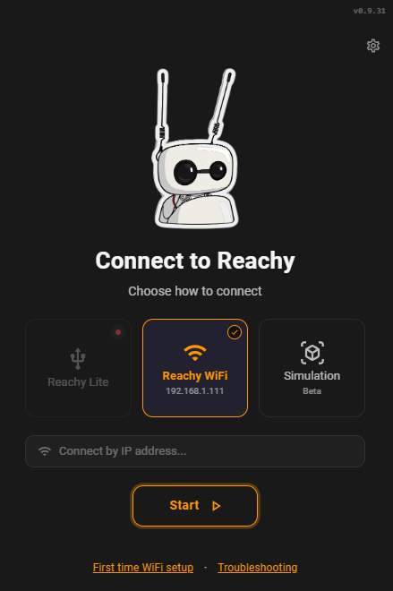
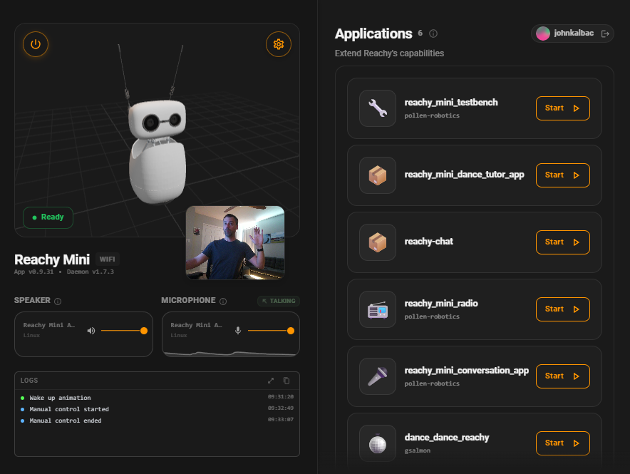
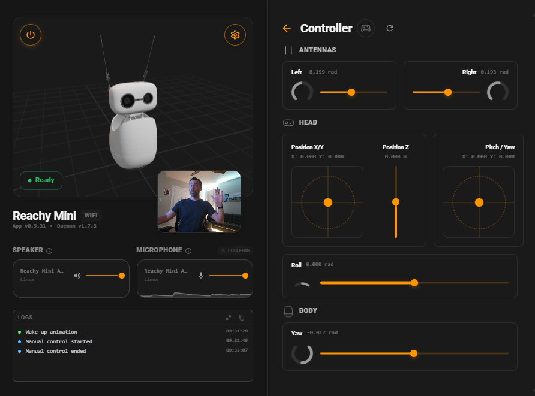
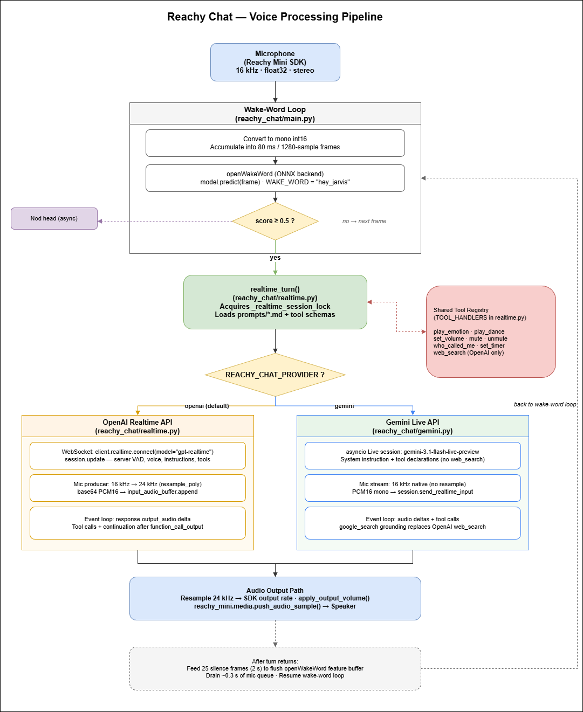
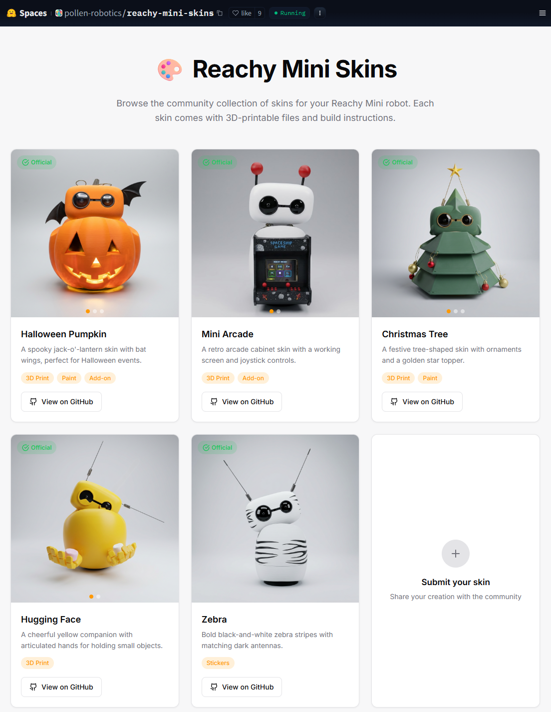

AI Show & Tell
reachy-chat
A wake-word voice assistant on a 7-DOF desktop robot.
Say "hey jarvis", have a multi-turn conversation, and let the robot play emotions, dance, set timers, search the web, and turn its head toward you — all through a realtime audio pipeline that streams to either OpenAI or Gemini.
1 — Open with a demo
Live Demo
The point of this app is that it's just there in the room with you. Before any slides, let's wake it up and run through the things it can do.

Prompts to try on stage
- "Hey Jarvis, what time is it?" → plain conversational reply, no tools
- "Hey Jarvis, play a dance." → play_dance
- "Hey Jarvis, you seem happy." → play_emotion
- "Hey Jarvis, set a 30-second timer." → set_timer (chime + spoken announcement on fire)
- "Hey Jarvis, who am I?" → who_called_me (direction-of-arrival head turn)
- "Hey Jarvis, what's the weather in Boston?" → web_search / Gemini grounding
2 — The hardware
Reachy Mini & Pollen Robotics
Reachy Mini is a small (~28 cm tall) desktop robot designed as a developer platform — open hardware, open software, Python-first.
7 degrees of freedom
- Head: 6-DOF parallel mechanism — X / Y / Z translation plus pitch / yaw / roll rotation
- Body: 1-DOF yaw (the whole robot rotates on its base)
- Antennas: 2 independent servos, used here as ambient state cues (speaking / listening)
On-board
- Raspberry Pi 5 + custom motor controller board (aarch64, Python 3.12)
- Stereo microphone array (the source of the direction-of-arrival used by
who_called_me) - Speaker, fisheye camera, Wi-Fi
- 3D-printed shell — swappable, see Skins & Shells
Pollen Robotics
French open-source robotics company — the original Reachy (full-size, humanoid bimanual) and now Reachy Mini. Acquired by Hugging Face in 2025, which is the interesting hook for this audience: the robotics SDK now lives next to the rest of the HF ecosystem, datasets (emotion / dance libraries) are on the Hub, and the community gallery uses Spaces.
3 — How apps actually run on it
Reachy SDK & Control Panel
The robot ships with a desktop control app and an on-device daemon
(reachy-mini-daemon, systemd). The daemon discovers
installed apps via a Python entry point, launches one at a time, and
hands it a connected ReachyMini instance plus a
stop_event. reachy-chat is one of those apps.
1. Connect

The desktop app discovers the robot on the LAN and connects over the network. Same code talks to a real robot, a Reachy Lite, or a simulator — useful for iterating on motion or prompts without the hardware nearby.
2. Main view — live state and installed apps

Notice reachy-chat in the apps list on
the right — that's the same app we just demoed. It's discovered via
a one-line entry in pyproject.toml:
[project.entry-points."reachy_mini_apps"]
reachy-chat = "reachy_chat.main:ReachyChat"
The contract: implement a ReachyMiniApp subclass with a
run(reachy_mini, stop_event) method, install the
package, and it shows up. Only one app runs at a time; the daemon
sends SIGINT to stop the current one before starting
another.
3. Manual controller — 7 DOF, exposed

All 7 joints exposed as sliders. The same targets the SDK writes to from code — both the antenna wave (during speaking / listening) and the recorded emotion / dance clips drive these axes.
motion_lock: the antenna
wave wants to write a new target every few milliseconds, but a dance
clip holds the joints for a few seconds. Without a shared lock they
fight and the antennas judder. The lock is a single
threading.Lock() shared between the wave loop and the
recorded-move player.
4 — How the conversation works
Voice Pipeline

wake-word loop -> realtime turn dispatched to OpenAI or Gemini -> audio output" />The hot path
- Mic: SDK delivers 16 kHz stereo float32 → we convert to int16 mono, accumulate into 80 ms / 1280-sample frames
- Wake word: each frame goes into openWakeWord (ONNX); local, no cloud round-trip until the wake word actually fires
- Realtime turn: on hit, dispatch to
run_openai_turnorrun_gemini_turnbased onprovider.nameinconfig.toml - Resample: 16 kHz → 24 kHz upstream (OpenAI Realtime wants 24 kHz PCM16); 24 kHz → SDK output rate downstream
- Turn detection: server-side VAD — we don't have to decide when the user is done talking, the provider does
- Multi-turn: after each reply, mic stays open for an 8 s follow-up window (slow antenna sway). Silence past that closes the session; max 3 min total.
Tool registry
The realtime model has a fixed set of function tools. Each one is a
_<name>_schema() builder + a
_tool_<name>(reachy_mini, args, ctx) handler in
realtime.py — adding a tool is one place.
| Tool | What it does |
|---|---|
play_emotion | Plays one short emotion clip from the HF emotions library. Async — model keeps talking. |
play_dance | Plays one longer dance clip. Async. |
set_volume | Sets output volume 0–100; applies to voice, chime, and timer announcements. |
mute / unmute | Silence without losing the volume level. |
who_called_me | Reads direction-of-arrival from the mic array, turns the head toward the speaker. |
web_search | OpenAI: bridges to the Responses-API web_search tool (synchronous, blocks the loop briefly). Gemini: replaced by built-in google_search grounding. |
set_timer | Registers a countdown. On fire: plays the chime, opens a brief realtime session to announce the label. |
5 — Where this goes next
Next Steps & Integrations
The current app is a complete loop, but the architecture leaves room to bolt on more. A few directions:
The richest direction is using Reachy as a voice front-end for an autonomous agent that already knows you — instead of a fresh realtime session per wake word, the conversation routes to a long-running agent with memory, skills, and access to your tools. Three projects make this concrete:
- OpenClaw — open-source local-first AI assistant that runs on your machine and can be reached via WhatsApp, Telegram, Discord, Slack, and other chat apps; controls browsers, files, and shell, with persistent memory and a community plugin ecosystem. Integration: wire Reachy in as another channel — wake on "hey jarvis", route to a local OpenClaw instance, and your house gets a voice surface on an agent that already sees your files and calendar.
- NemoClaw — NVIDIA's open-source security layer on top of OpenClaw: adds policy-based privacy and security guardrails (via NVIDIA OpenShell) and is tuned for local execution on RTX PCs and DGX systems. Integration: same voice-on-an-agent story, but with enterprise-grade guardrails around what the agent is allowed to touch — useful for deploying Reachy somewhere that actually cares.
-
Hermes (Nous Research)
— autonomous server-based agent with persistent memory, skill
generation that improves over time, scheduled automation, and
sandboxed execution across local / Docker / SSH / Modal backends.
Already speaks Telegram, Discord, Slack, Signal, Email, CLI.
Integration: add a voice channel — the
set_timertool becomes "schedule a nightly summary" and the agent's learned skills are reachable from across the room. -
Vision detection — the Reachy Mini has a fisheye
camera that's currently unused by this app. A small on-device VLM
(or a remote one called from a new tool) would unlock "look at
what I'm pointing at" interactions:
describe_scene(),find_object(name),track_face(). -
Running fully locally — swap the realtime
backends for a local stack:
whisper.cppfor STT, a small local LLM, and Piper or Kokoro for TTS. Loses some latency and reasoning quality, gains zero cloud dependency. Could ship as a third provider inconfig.tomlalongsideopenaiandgemini.
realtime.py means swapping in
a text agent (OpenClaw / NemoClaw / Hermes) behind an STT → agent
→ TTS shim is mostly a new run_<agent>_turn
function and a config switch.
6 — The body is forkable too
Skins & 3D-Printed Shells
The Reachy Mini's outer shell is a 3D print. Pollen Robotics hosts a community gallery on Hugging Face Spaces where designers share alternate shells — different colors, themes, character mods, the whole open-hardware ethos.

7 — Wrap-up
Q&A & Resources
Happy to dig into any of it — code, hardware, the realtime APIs, deployment, motion control.